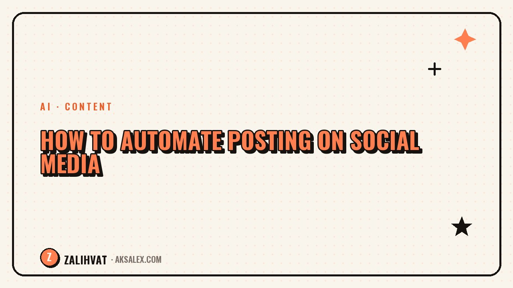

How to Automate Posting on Social Media

Publishing content manually every day is a separate job on top of shooting and editing: open the app, add a caption, tag it, pick a time. Automating your posting removes that routine: you prepare a batch of content in advance, and a service publishes it on schedule. Let's look at what's actually worth automating and what's better left under manual control.
Why automate posting
The main reason isn't saving a couple of minutes a day - it's reducing the risk of missing a publication. When your schedule lives only in your head, any busy day throws off the plan, and irregular posting hurts your reach. Auto-posting solves this: content goes out on plan even if you're busy with something else at that moment.
The second benefit is batch work. It's easier to sit down once and upload ten posts for the next two weeks than to open the app every single day for one publication.
The third benefit shows up not immediately but after a month or two: once the posting schedule stops depending on your mood and workload, your stats become more even, instead of swinging between activity spikes and long pauses.
What you can hand off to automation
- Publishing on schedule at pre-selected times
- Cross-posting one video to several social networks at once
- Basic captions and hashtags from a template
- Reminders for recurring content series
What's better kept under manual control
You should do the final check before publishing yourself - automation doesn't always notice that a caption got cut off or a poorly chosen cover was selected. Responding to comments and messages also can't be fully handed off to a bot: the audience quickly senses when they're getting a template reply instead of a real person.
Automation saves you time on routine tasks, but it shouldn't save you time on paying attention to your audience.
How to choose a service for auto-posting
Three things matter when choosing a service: support for the platforms you need, the ability to upload content in batches, and clear stats on your posts. Here's what to look at first.
| Criterion | Why it matters |
|---|---|
| Support for the platforms you need | There's no point paying for a service that doesn't support your main platform |
| Batch uploading | Saves time on the process itself, not just on publishing |
| Flexible scheduling | Lets you set different times for different days of the week |
| Post analytics | Shows which topics and formats perform best |
How to build a workflow around auto-posting
1. Prepare content in batches
Shoot and edit several videos in one sitting - this gives you a buffer for the auto-posting queue and reduces the load on shoot days.
2. Upload 1-2 weeks ahead
This leaves time to spot and fix a bad caption or cover before the post goes live.
3. Review the schedule once a week
Check the publication queue so you can add a timely topic or shift a post to match trending news.
Frequently asked questions
Will reach drop because of auto-posting?
No, platforms don't downrank content just because it's auto-posted. Reach depends on the quality of the video and the audience's reaction, not the publishing method.
How many posts should I upload in advance?
Ideally 1-2 weeks ahead - that's enough of a buffer, while still leaving room to adjust the plan for current topics.
Can replying to comments be automated?
Partially, for common questions. But live interaction with your audience is best kept for yourself - that's what sets a blog apart from an ad channel.
Do I need a paid service for auto-posting?
Not always - many platforms offer basic scheduling for free. A paid service is worth it if cross-posting and detailed analytics matter to you.
How often should I review the schedule?
Once a week is enough to keep the queue current and react in time to trending topics or changes in your content plan.
not by hand